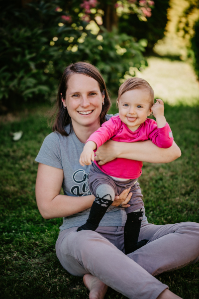
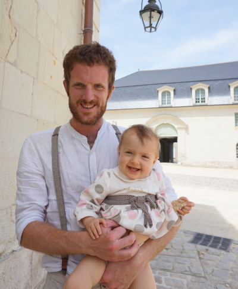

Lucie & Antoine & Salomé !
Chcete vědět všechno?
Vous voulez tout savoir ?
Je vous présente Lucie et Antoine, ils sont beaux non ? Normal, ils me ressemblent !
 Lucie ráda hraje na ukulele a ještě radši drandí na kole, především když spím na sedačce za ní. Když začnu protestovat, jede ještě rychleji, což mi vyhovuje! Když zrovna nezamotám všechna klubíčka, moje mamka háčkuje čepice nebo hračky a nebo si ráda něco kutí. Chtěla by cestovat a pořád nám s taťkou vypráví o severní točně, kam by chtěla vyrazit. Než jde spát, ráda čte, ale ne dlouho, páč ji brzy vzbudím.
Lucie aime jouer du Yukulélé et se prommener en vélo sur les chemins, surtout si je dors dans le siège derrière. Quand je commence à faire la sirène, elle va plus vite pour rentrer avant d'en avoir plein les oreilles, moi ça me va bien ! Quand je ne déroule pas les pelotes de laine, Maman aime bien tricoter et crocheter des bonnets ou bricoler. Elle a envie de voyages et nous parle souvent de la Norvège, terre de paysages fantastiques et de sombres polars qu'elle lit le soir !
 Tohle je taťka: rád běhá v lese, se mnou ve vozíku, což je teda trochu maso, ale aspoň má výmluvu, že neběží dost rychle. Taky jezdí často vlakem a vypráví nám s mamkou vtípky. Ne vždycky mu rozumím, ale radši říkám Aha aha, jako by mě to zajímalo. Taky mě učí písničky u kterých ukazujeme ručičkama, nejradši mám tu s velkým jelenem. Je sranda, kdyz mluví česky, brzy mu dojde, že to já učím mluvit jeho
Lui c'est papa, il aime courir dans la forêt, surtout quand je suis dans la cariolle devant lui, c'est son côté un peu masochiste... à moins que ce soit une excuse pour ne pas courir très vite ! Je crois qu'il aime bien construire des trucs et nous raconter des blagues. Je ne comprend pas toujours mais lui dis toujours "ah ha" d'un air très intéressée. Il m'apprend des chansons avec les mains, celles que je préfère sont celles avec le grand cerf et le limaçon ! Il est rigolo quand il essaie de parler tchèque, il va vite se rendre compte que c'est moi qui vais lui apprendre !